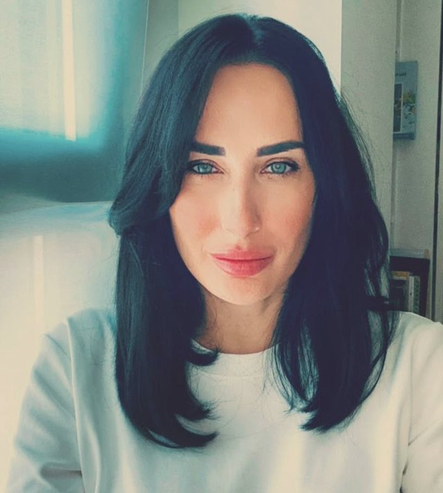

Раздел первый
Финансовое образование и опыт работы на ключевых должностях
Трёхмерная сцена не запустилась в этом браузере — всё содержимое страницы доступно ниже.
Обо мне
Кристина Щербина — дипломированный психолог, бизнес-психолог, гештальт-терапевт в процессе обучения.

Мой путь
Привет! Я Кристина Щербина. Сегодня я дипломированный психолог, бизнес-психолог, гештальт-терапевт в процессе обучения.
Мой путь начался с финансового образования и опыта работы на ключевых должностях. Но со временем я всё чаще задавала себе вопрос: кто я? Что делает человека по-настоящему живым? Когда мы можем быть настоящими — со всеми своими чувствами, потребностями и желаниями? Так начался второй раздел моего профессионального пути — психология.
Психология и гештальт-терапия стали для меня не только профессией, но и дорогой к себе. С теплом и уважением я сопровождаю тех, кто хочет сделать этот путь осознанным и живым. Это путь к свободе, к честности с собой и глубокому принятию.
Раздел первый
Финансовое образование и опыт работы на ключевых должностях
Раздел второй
Психология и гештальт-терапия — не только профессия, но и дорога к себе
Образование
Подход
Мой подход — это встреча в настоящем, с уважением к вашему уникальному опыту.
Пространство, где вы сможете
Бесплатное знакомство online или в València. Я рядом — чтобы бережно поддержать ваш путь к себе.